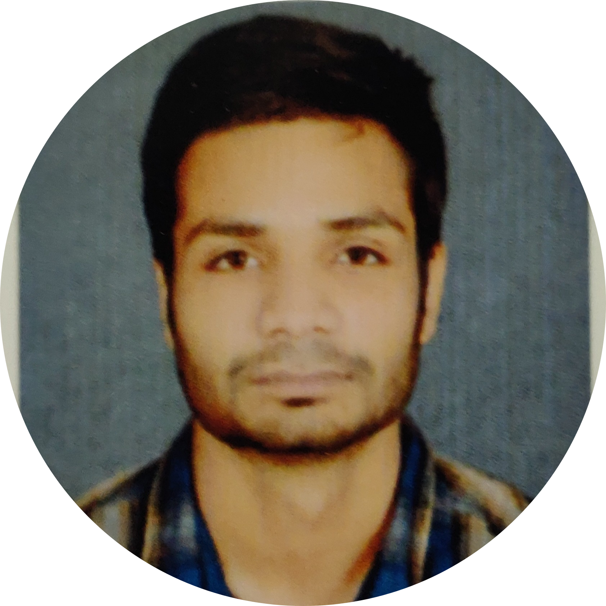

|  |
Sandeep Karora
Jaipur, Rajasthan
+918209659958
sandeepkarora1@gmail.com
I am a Mainframe Developer. I ♥ sketching and reading about Space.
|
About me:
Focused Software Developer with experience in developing products, diagnosing issues and
documenting program development. A confident programmer with exemplary math, analysis
and troubleshooting skills.
Summary of skills:
- Strong understanding of structured analysis techniques
- Skilled in developing Mainframe applications for a variety of industries
- Excellent coordination, interpersonal and communication skills
- Skilled in performing project requirement analysis, coding and testing
- Complete knowledge of COBOL, JCL, VSAM and DB2
- Complete knowledge of project life cycle
Technical Skills:
- Languages: COBOL, JCL
- Databases: VSAM, DB2
- Tools: Mainframe Express, Xpediter, File-Aid, Endeavor, Abend-Aid and SPUFI
- Operating Systems: Windows , z/OS
Work Experience:
Programmer Analyst
Cognizant Technology Solutions (Kolkata, West Bengal) 09/2018 - Present
- Interprets business requirements and delivered design solutions
- Evaluated, tested and coded complex modules
- Develops solutions using agile methodologies
- Reported daily status to technical delivery managers
- Performed coding, component integration testing, and unit testing
- Evaluated designs and development of project life-cycle
- Created and updated system's functional and reference documentation
- Offered support during the testing phase
Education:
Bachelor of Technology in Electrical Engineering (2017)
Jaipur National University
Jaipur, Rajasthan